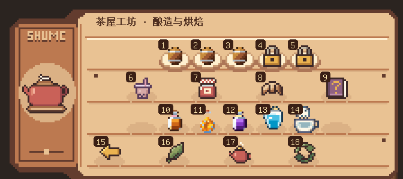
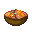
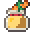
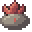
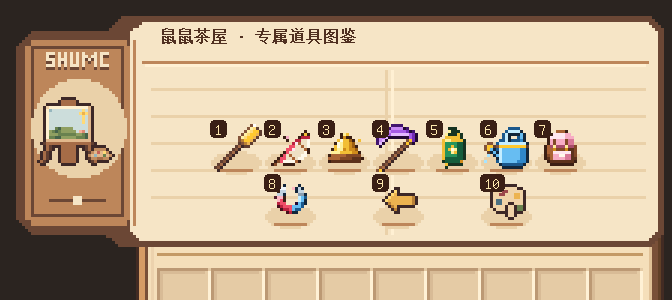

配方与道具图鉴
工坊 17 道配方、随身小吃、宴席大餐、专精特产与香料、锻造合金、茶屋神器与 3D 家具，一页查完
玩法怎么操作见 工坊 · 料理 · 锻造，这页只当速查表用。按 / 键可以直接搜物品名。
茶屋工坊 17 道配方
在 /brew 里点配方，原料从背包自动扣。出货价是 ★ 凡品的底价，★★ 醇香 ×1.35、★★★ 珍藏 ×1.9、👑 大师特调 ×2.8；未含献祭、天赋等加成。「任意鱼」是自己钓的茶屋鱼（奇物不算）或原版生鳕鱼 / 生鲑鱼，高星鱼入料有保底升星。
| 成品 | 分类 | 原料 | 基础时间 | 效果 | ★ 出货 | 👑 出货 |
|---|---|---|---|---|---|---|
 樱花乌龙冷萃 樱花乌龙冷萃 | 茶饮 | 樱花树叶 ×2 + 甜浆果 ×2 + 糖 | 1 分 | 速度 I + 幸运 I | 48 | 134 |
 暖冬姜蜜茶 暖冬姜蜜茶 | 茶饮 | 蜂蜜瓶 + 甜菜根 ×2 + 糖 | 1 分 15 秒 | 生命恢复 I + 抗火 | 58 | 162 |
| 月光芋圆奶茶 | 茶饮 | 牛奶桶 + 可可豆 ×2 + 发光浆果 | 1 分 30 秒 | 夜视 + 幸运 I + 速度 I | 78 | 218 |
 碧海海盐芝士茶 碧海海盐芝士茶 | 茶饮 | 任意鱼 + 干海带 ×2 + 牛奶桶 | 1 分 35 秒 | 海豚的恩惠 + 水下呼吸 + 急迫 I | 92 | 258 |
 出窍安神茶 出窍安神茶 | 茶饮 | 发光浆果 ×2 + 樱花树叶 ×2 + 蜂蜜瓶 | 1 分 30 秒 | 灵魂出窍，飞出身体看自己的家 | 40 | 112 |
| 星露甜浆果酱 | 果酱 | 甜浆果 ×4 + 糖 ×2 + 玻璃瓶 | 2 分 | 跳跃提升 II + 急迫 I + 饱和 | 82 | 230 |
 金秋苹果气泡酿 金秋苹果气泡酿 | 果酱 | 苹果 ×3 + 蜂蜜瓶 + 糖 ×2 | 3 分 | 力量 I + 生命恢复 I + 饱和 | 115 | 322 |
 鲜鱼秘制酱汁 鲜鱼秘制酱汁 | 果酱 | 任意鱼 + 干海带 ×2 + 玻璃瓶 | 2 分 30 秒 | 水下呼吸 + 海豚的恩惠 + 幸运 | 98 | 274 |
| 星露鱼子佳酿 | 果酱 | 任意鱼 + 甜浆果 ×3 + 蜂蜜瓶 | 2 分 40 秒 | 幸运 II + 力量 I + 生命恢复 I | 128 | 358 |
 焦糖肉桂卷 焦糖肉桂卷 | 烘焙 | 小麦 ×3 + 糖 ×2 + 鸡蛋 | 1 分 30 秒 | 饱和 + 速度 I | 68 | 190 |
 芝芝抹茶大福 芝芝抹茶大福 | 烘焙 | 小麦 ×2 + 樱花树叶 ×2 + 蜂蜜瓶 | 1 分 45 秒 | 缓降 + 生命恢复 I | 88 | 246 |
 秋日南瓜焦糖派 秋日南瓜焦糖派 | 烘焙 | 南瓜 + 鸡蛋 ×2 + 糖 ×2 | 2 分 | 急迫 II + 抗性提升 I | 94 | 263 |
 樱花鲷鱼烧 樱花鲷鱼烧 | 烘焙 | 任意鱼 + 小麦 ×2 + 樱花树叶 ×2 | 1 分 50 秒 | 饱和 + 速度 I + 缓降 | 105 | 294 |
| 落樱春风露 | 隐藏秘方 | 樱花树叶 ×2 + 甜浆果 ×2 + 盐渍樱花瓣（春） ×1 | 2 分 | 速度 II + 幸运 II + 生命恢复 I | 180 | 504 |
 盛夏薄荷气泡饮 盛夏薄荷气泡饮 | 隐藏秘方 | 苹果 ×2 + 糖 ×2 + 盛夏薄荷嫩叶（夏） ×1 | 2 分 | 急迫 II + 速度 II + 饱和 | 190 | 532 |
| 金秋锦鲤御羹 | 隐藏秘方 | 任意鱼 + 南瓜 + 金秋桂花蜜露（秋） ×1 | 2 分 30 秒 | 海豚的恩惠 + 饱和 + 幸运 II | 220 | 616 |
| 暖冬雪松肉桂拿铁 | 隐藏秘方 | 牛奶桶 + 可可豆 ×2 + 雪松肉桂棒（冬） ×1 | 2 分 30 秒 | 抗火 + 急迫 II + 夜视 | 210 | 588 |
- 精选提香模式：多耗 1 个催化剂（紫水晶碎片 / 蜂蜜块 / 金胡萝卜任选），必出 ★★ 以上。
- 隐藏秘方要加 1 份当季香料（采摘成熟作物时随机掉落）。全服第一个做出来的人永久冠名，并得 500 福气值。
- 基础时间会被酿造师天赋、夏季欢歌包、潜行右键木桶 / 营火打开工坊等加速。


随身小吃 6 道
/kitchen 里材料齐了点一下当场做，也可以在工作台无序合成：
| 小吃 | 配方 | 效果 |
|---|---|---|
| 樱花抹茶拿铁 | 糖 + 牛奶桶 + 樱花树叶 | 速度 I（2 分钟）+ 樱花粒子 |
 焦糖蜂蜜松饼 焦糖蜂蜜松饼 | 小麦 + 蜂蜜瓶 + 鸡蛋 | 饱和 + 生命恢复 I（90 秒） |
 矿工浓缩冰美式 矿工浓缩冰美式 | 可可豆 + 糖 + 冰块 | 急迫 II + 夜视（3 分钟） |
 草莓爱心奶昔 草莓爱心奶昔 | 甜浆果 + 牛奶桶 + 糖 | 跳跃提升 II + 爱心粒子（2 分钟） |
| 生鲑鱼 + 生鳕鱼 + 干海带 | 水下呼吸 + 幸运 II（3 分钟） | |
 暖冬营火浓汤 | 烤马铃薯 + 熟牛肉 + 碗 | 抗火 + 抗性提升 I（3 分钟） |
3D 宴席大餐 6 道
要先买 3D 茶屋烹饪灶台（1200 币）。食材平均 2.5★ 出「秘制」、3.5★ 出「御膳」。完整配方和效果见 宴席灶台。

樱露草莓奶油蛋糕
5 份 · 炭火 120 币
鱼王豪华刺身船
5 份 · 炭火 180 币
黑金松露奶油浓汤
5 份 · 炭火 220 币

宇治抹茶樱花芭菲
5 份 · 炭火 160 币

星露芝士铜锅
5 份 · 炭火 220 币

鼠鼠茶屋满汉全席
8 份 + 全服播报 · 炭火 680 币
专精特产与当季香料
专精特产（只有主修该专精才会掉）
| 特产 | 谁能拿到 | 用途 |
|---|---|---|
| 🌿 晨露茶芽 | 🌿 农艺师：收获作物 35% 掉落 | 饰品（樱花风铃指环、锦鲤四叶草护符）、主厨委托、私房配方 |
| 🐟 鲜润鱼露 | 🎣 垂钓客：钓鱼 30% 捞到 | 饰品（星露鹰眼挂坠、锦鲤四叶草护符）、主厨委托、私房配方 |
| 💎 茶具星砂 | ⛏ 探矿匠：挖矿 25% 伴生 | 饰品（熔炉核心指环、暗夜血珀坠饰）、主厨委托、私房配方 |
当季香料（任何人采摘成熟作物都可能掉）

🌸 盐渍樱花瓣
春季 · 出货 20 币

🌿 盛夏薄荷嫩叶
夏季 · 出货 20 币

🍁 金秋桂花蜜露
秋季 · 出货 20 币

❄ 雪松肉桂棒
冬季 · 出货 20 币
香料是隐藏秘方的关键材料；每日委托的全勤礼盒也会送 1 份当季香料。
锻造合金
在 /forge 的「矿石精炼」页做，升星、铭刻、饰品和卷轴都要用。
星露精铁锭
铁锭 ×4 + 煤炭 ×2 · 10 币
樱花秘银锭
精铁锭 ×2 + 金锭 ×2 + 樱花树叶 ×2 · 25 币

星辉紫晶核
紫水晶碎片 ×4 + 钻石 · 40 币

红莲淬火石
红石 ×4 + 下界石英 ×2 + 金锭 · 30 币
每级升星要什么合金，见 淬火升星。
茶屋神器 /cozyitem
/cozyitem（别名 /道具图鉴）打开本服专属道具图鉴。这 8 件都在团子杂货铺 /shop 的「茶屋神器」分类里买：
| 道具 | 价格 | 怎么用 |
|---|---|---|
 茶屋金铲圈地杖 茶屋金铲圈地杖 | 120 币 | 右键地面两个对角点圈出保护领地 |
| 甘露浇水壶 | 580 币 | 右键湿润周围 3×3 耕地，并有概率催熟作物（6 秒冷却） |
 茶屋传呼铃 茶屋传呼铃 | 450 币 | 右键摇铃，一键传回主城 |
 樱花纸伞 樱花纸伞 | 680 币 | 拿在手上或副手：缓降 + 速度 I，还会飘樱花 |
| 随身茶屋背包 | 680 币 | 右键打开 27 格随身储物（东西存在这个背包物品里，别弄丢） |
 星露磁铁指环 星露磁铁指环 | 520 币 | 放在快捷栏、副手或饰品匣，自动吸附附近掉落物和经验球 |
 星露丰收镰 星露丰收镰 | 780 币 | 右键成熟作物，一次收割周围 3×3 并自动补种 |
| 芝芝幸运御守 | 980 币 | 主手、副手或饰品匣里：常驻幸运 I |


3D 茶屋家具
在杂货铺「装饰家具」或柚子木作馆（/npcshop furniture）买。拿着右键地面摆放，左键或潜行右键收回。

🍵 桌面茶具
260 币 · 右键品茶回血
🌸 星露樱花盆栽
280 币 · 右键飘落樱花
🏮 暖黄小台灯
320 币 · 真光源，右键开关
🎐 晴天风铃
280 币 · 可挂屋檐，右键拨响

🛋 芝芝软垫坐垫
240 币 · 右键坐下
🍓 祝尼魔果酱展示架
480 币 · 冬季暖炉包解锁
🌿 祝尼魔毛绒玩偶
560 币 · 冬季暖炉包解锁